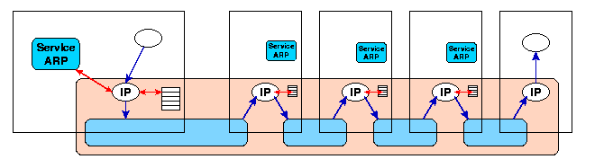

Etude d'une couche de niveau Réseau (Internet protocol)
Patrice Laurençot
Le rôle d'une couche Réseau est d'acheminer un bloc d'octets de couche MAC en couche MAC depuis le système dans lequel
un utilisateur expéditeur a fait la demande de transmission jusqu'au système dans lequel se trouve l'utilisateur
destinataire, selon une route pré-calculée (X25) ou calculée au fur et à mesure de l'acheminement (IP).

Dans la terminologie IP, une couche MAC est appelée sous-réseau.
- Protocole : appellations (adresses-IP), PDU
- Correspondance IP et couches MAC
- Routage